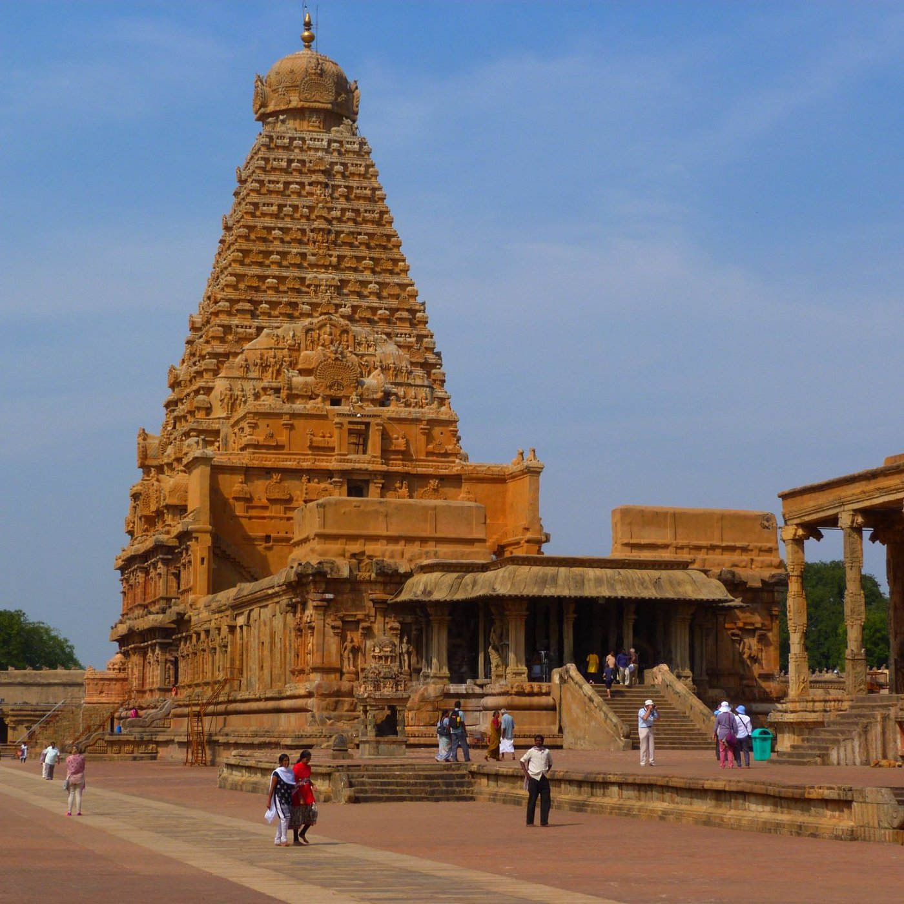
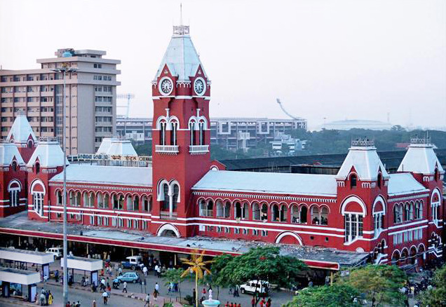
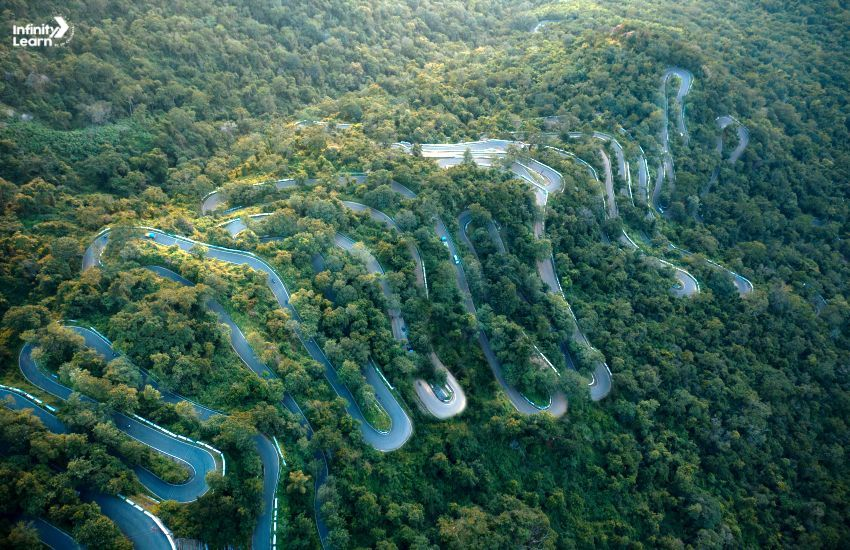
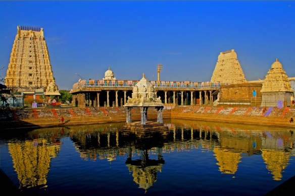
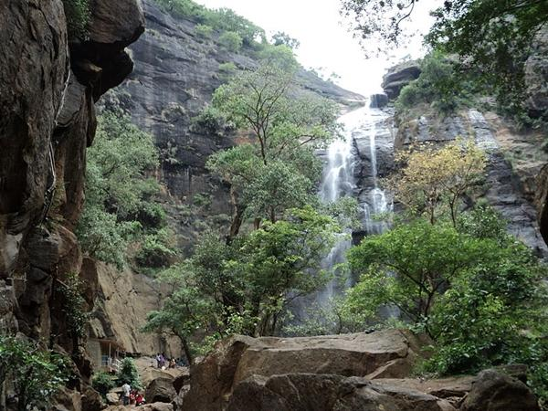
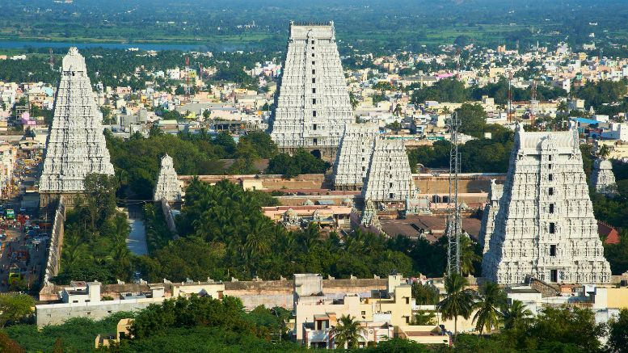
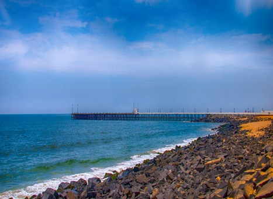
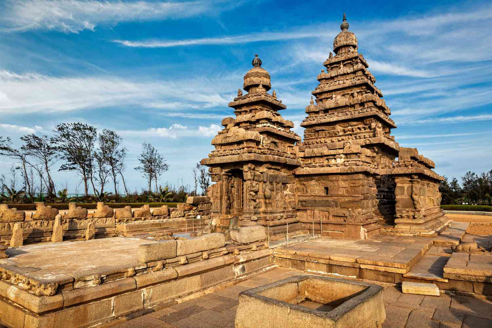
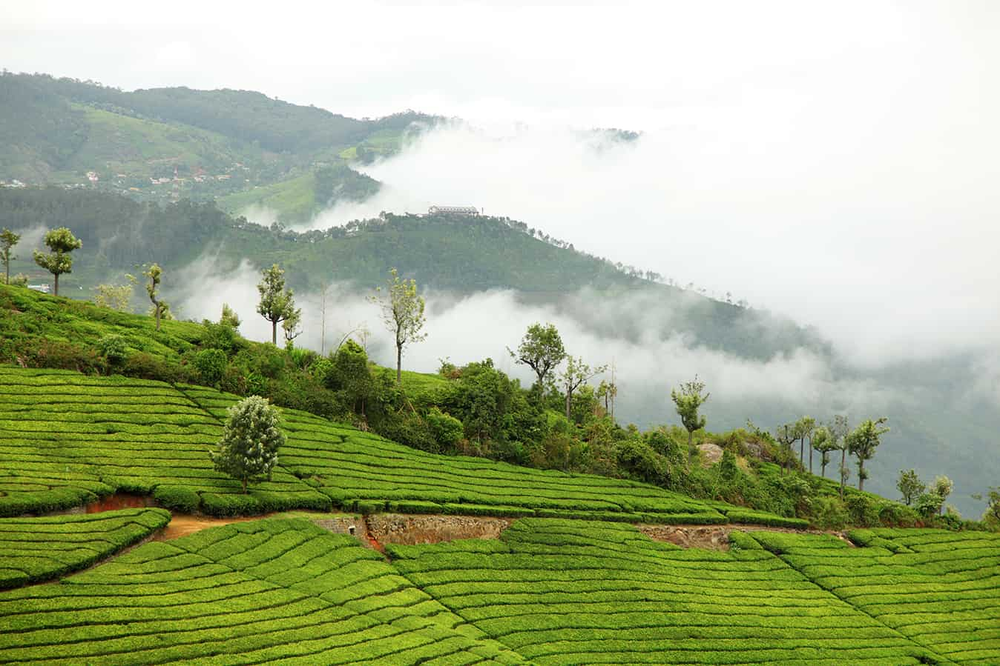
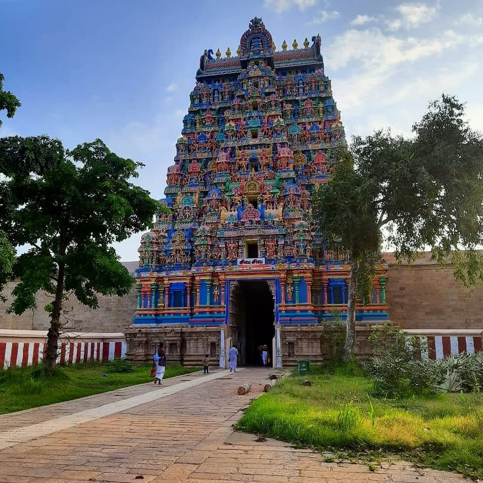

Thanjavur, also known as Tanjore, is a historical city in Tamil Nadu known for its
temples, art, and architecture. It's
a major agricultural center and the "Rice Bowl of Tamil Nadu".
The city is renowned for the
Brihadeeswarar Temple, a
UNESCO World Heritage site, and
Tanjore painting. Thanjavur was the capital of the Chola dynasty and
later ruled by
various dynasties, leaving behind a rich cultural heritage.
1. Brihadeeswarar Temple:
This magnificent temple, built by the Chola emperor Raja Raja I, is a prime example of
Chola
architecture and a UNESCO
World Heritage site.
2. Tanjore Painting:
Thanjavur is the birthplace of Tanjore paintings, a unique style of classical South Indian art
characterized by rich
colors, gold foils, and gem inlays.
3. Historical Significance:
Thanjavur served as the capital of the Chola empire and was later ruled by the Nayaks and
Marathas,
leaving behind a
legacy of grand monuments and cultural influences.
4. Agricultural Hub:
The city is located in the Kaveri delta and is a major agricultural center, earning it the
nickname
"Rice Bowl of Tamil
Nadu".
5. UNESCO World Heritage Site:
Along with the Brihadeeswarar Temple, several other temples in and around Thanjavur are
part of the
Great Living Chola
Temples, a UNESCO World Heritage site.

Chennai, previously known as Madras, is the capital of Tamil Nadu, India, and a major
cultural, economic, and
educational hub. It's known for its rich history, diverse culture, and significant contributions to the
arts,
particularly classical dance and music. The city also boasts a thriving automobile industry and is a
major center for
medical tourism.
1. Cultural Capital:
Chennai is widely recognized as the cultural capital of South India, with a strong emphasis on Carnatic
music,
Bharatanatyam dance, and traditional arts.
2. Historical Significance:
The city emerged from the British East India Company's settlement at Fort St. George and has a rich
colonial past, with
Madras being its former name.
3. Economic Hub:
Chennai is a significant economic center, particularly for the automobile industry, earning it the
nickname "Detroit of
India". It's also a major hub for IT and other industries.
4. Medical Tourism:
Chennai is a prominent destination for medical tourism, often referred to as "India's health
capital".
5. Coastal City:
Located on the Coromandel Coast of the Bay of Bengal, Chennai is known for its beaches, including the
famous Marina
Beach, the second-longest urban beach in the world.

Kolli Hills, also known as Kollimalai, is a mountain range in Tamil Nadu known for
its
scenic
beauty, medicinal plants,
and historical significance. Key points include:
the Arapaleswarar Temple, a pilgrimage site; the
Agaya
Gangai
waterfalls,
a popular trekking destination; the 70 hairpin bends on the way up; its reputation
for
medicinal herbs; and
the annual Valvil Ori festival.
1. Arapaleeswarar Temple:
This ancient temple dedicated to Lord Shiva is a major pilgrimage site and a focal point of
religious
activity in the
region.
2. Agaya Gangai Waterfalls:
A stunning waterfall that requires descending 1,300 steps to reach, offering a challenging and
rewarding
trek for
visitors.
3. Hairpin Bends:
The journey to Kolli Hills is characterized by 70 hairpin bends, offering a thrilling and
picturesque
drive, especially
popular with motorcycle enthusiasts.
4. Medicinal Plants:
Kolli Hills is renowned for its rich biodiversity, particularly its abundance of medicinal plants
and
herbs, which are
used in traditional Ayurvedic and Siddha medicine.
5. Valvil Ori Festival:
This annual festival, held in August, celebrates the legendary King Valvil Ori and adds to the
cultural
vibrancy of the
region.

Kanchipuram, also known as Kanchi or Conjeevaram, is an ancient city in Tamil Nadu, India,
famous for its temples, silk
sarees, and historical significance. It's known as the "City of Thousand Temples" and the "Silk City".
1. Temple City:
Kanchipuram is renowned for its numerous ancient Hindu temples, showcasing exquisite architecture from
the Pallava and
Chola dynasties.
2. Silk Sarees:
The city is a major producer of Kanchipuram silk sarees, known for their intricate designs, vibrant
colors, and use of
gold zari.
3. Historical Capital:
Kanchipuram served as the capital of the Pallava kingdom and was an important center of learning,
particularly for Tamil
and Sanskrit scholars.
4. Pancha Bootha Sthalam:
One of the five major Shiva temples, Ekambareswarar Temple, represents the Earth element and is a
significant pilgrimage
site.
5. Spiritual Significance:
Kanchipuram is one of the seven sacred Hindu cities, holding immense religious importance and attracting
pilgrims from
across India.

Puliyancholai is a popular tourist spot located at the foothills of Kolli Hills, near
Tiruchirappalli.
It's known for
its natural beauty, including a perennial stream, lush green forests,
and waterfalls:
1. Location and Accessibility:
Puliyancholai is situated about 72 km from Tiruchirappalli, accessible by road,
making it a
convenient day trip
destination.
2. Perennial Stream:
A significant feature is the stream that flows throughout the year, providing a constant
source of
water and
contributing to the area's beauty.
3. Trekking and Nature Trails:
The area offers opportunities for trekking and exploring the surrounding forests and hills,
with
trails leading to
ancient stones, curved rocks, and caves.
4. Waterfalls and Bathing Spot:
Puliyancholai features waterfalls and natural springs, making it a popular spot for bathing and
enjoying the cool,
refreshing water.
5. Medicinal Properties:
Some believe the stream water has medicinal properties, attracting visitors
seeking therapeutic
benefits.

Tiruvannamalai is a significant spiritual and historical site in Tamil Nadu, India, known for
the Annamalaiyar Temple,
the Arunachala Hill, and the practice of Girivalam. Key points include its status as one of the Pancha
Bhoota Sthalams,
its rich temple architecture, its connection to Sri Ramana Maharshi, its role as a pilgrimage site, and
its historical
significance under various dynasties.
1. Annamalaiyar Temple:
This temple, dedicated to Lord Shiva, is one of the largest in India and a prominent example of
Dravidian architecture,
according to Tiruvannamalai District. It is also one of the Pancha Bhoota Sthalams, representing the
element of fire
(Agni).
2. Arunachala Hill:
The hill itself is considered sacred and is a focus of worship and pilgrimage, especially during the
full moon. It's
believed to be a manifestation of Lord Shiva.
3. Girivalam:
The practice of circumambulating the Arunachala Hill, a 14-kilometer path, is a central spiritual
activity for devotees.
4. Historical Significance:
Tiruvannamalai has been ruled by various dynasties, including the Cholas, Pandyas, and Vijayanagara
Empire, and has a
rich history evident in its temples and inscriptions.
5. Spiritual Center:
Tiruvannamalai is a major pilgrimage center, particularly for followers of Shaivism, and is also
associated with the
modern sage Sri Ramana Maharshi

Parangipettai Beach, also known as Porto Novo Beach, is a coastal area known for its
historical
significance, scenic
beauty, and religious importance. It's located on the north bank of the Vellar
River mouth, near
Chidambaram.
1. Historical Significance:
Parangipettai Beach was once a bustling port and a key trading center. It also witnessed the
Battle
of Porto
Novo in
1781 during the Second Anglo-Mysore War, where British and
Mysore forces clashed.
2. Scenic Beauty:
The beach features a long stretch of golden sand and clear waters, offering a tranquil escape.
It's
a great
place to
relax and enjoy the natural beauty of the coastline.
3. Religious Importance:
The town of Parangipettai itself is an important pilgrimage center for both Muslims and Hindus.
While the beach
itself
doesn't have specific religious structures, its proximity to religious
sites adds to its
significance.
4. Proximity to Porto Novo Lighthouse:
The Porto Novo Lighthouse, built by the Government of India in 1980, is located on the northern
bank
the Vellar
River
mouth near the beach. It serves as a Navtex station and is a notable landmark.
5. Ideal for Relaxation and Exploration:
The beach is a great place for leisurely strolls along the shore, appreciating the scenery,
and
learning about
the
area's rich history. It offers a peaceful atmosphere for relaxation and reflection.

Mamallapuram, also known as Mahabalipuram, is a town in Tamil Nadu known for its UNESCO
World Heritage Site status and
its stunning rock-cut temples and monuments. It was a prominent port city during the Pallava dynasty and
boasts a rich
history and architectural heritage.
1. Pallava Dynasty's Artistic Legacy:
The town is renowned for its remarkable rock-cut architecture and sculptures created by the Pallava
rulers of the 7th
and 8th centuries.
2. UNESCO World Heritage Site:
The Group of Monuments at Mahabalipuram, including the Shore Temple, Five Rathas, and Arjuna's Penance,
are recognized
as a UNESCO World Heritage site.
3. Diverse Architectural Styles:
Mamallapuram showcases various architectural styles like cave temples, monolithic rock-cut structures
(rathas), and
structural temples, offering a glimpse into the evolution of Dravidian temple architecture.
4. Shore Temple's Coastal Beauty:
The Shore Temple, dedicated to Lord Shiva, is a prominent landmark known for its unique coastal location
and intricate
carvings.
5. Historical Significance:
Mamallapuram served as a significant port city during the Pallava period, facilitating trade and
cultural exchange with
other regions.

Coonoor, the second-largest hill station in the Nilgiris, is known for its tea estates,
scenic views, and pleasant
climate. It's a popular destination for nature lovers and those
seeking a peaceful retreat.
1. Tea Plantations:
Coonoor is famous for its vast tea gardens and tea factories, particularly the Highfield
Tea Estate,
where visitors can
learn about the tea-making process.
2. Sim's Park:
This botanical garden, spread over 12 hectares, houses over 1,000 plant species and
is known for its
annual fruit show.
3. Dolphin's Nose:
A viewpoint offering panoramic views of the Nilgiris, Catherine Falls, and the surrounding
tea
plantations.
4. Lamb's Rock:
Another vantage point, Lamb's Rock provides views of the Coimbatore plains, tea plantations,
and
forests.
5. Nilgiri Mountain Railway:
The historic narrow-gauge railway line passes through Coonoor, offering scenic
rides through the
hills.

Jambukeswarar Temple, also known as Thiruvanaikaval Temple, is a significant Shiva temple in
Tiruchirappalli, Tamil
Nadu, dedicated to the water element. It's one of the Pancha Bhoota Sthalams, representing the five
elements of nature.
1. Water Element:
The temple symbolizes the water element (Appu Sthalam) and features a Shivalingam constantly moistened
by an underground
spring.
2. Pancha Bhoota Sthalam:
It's one of the five temples representing the five primordial elements of nature, with Jambukeswarar
representing water.
3. Goddess Akilandeswari:
The temple also houses a shrine dedicated to Goddess Akilandeswari, who is believed to have worshipped
Lord Shiva here.
4. Unique Ritual:
A daily ritual involves the temple priest dressing as Akilandeswari and performing pooja at noon, a
practice considered
sacred.
5. Architectural Significance:
The temple showcases impressive Dravidian architecture with intricate carvings, multiple enclosures, and
a massive outer
wall.
hello